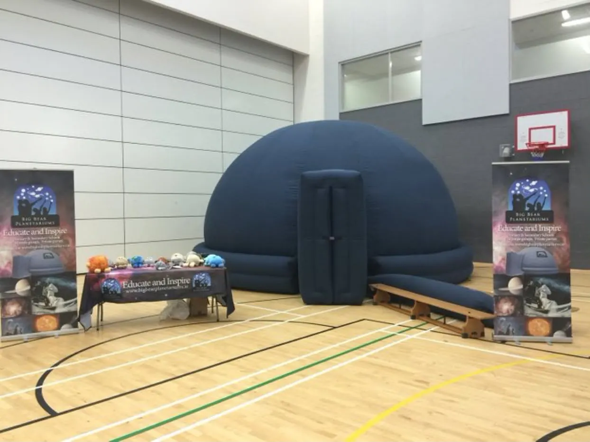

Frequently asked questions
Everything schools usually ask before booking a Big Bear Planetariums visit. Can’t see your question? Call us on 083 800 1933 or email info@bigbearplanetariums.ie.
1. What space does the school need?
We need a clear indoor floor area measuring 9 metres × 9 metres, with at least 4 metres of clear ceiling height.
2. How many pupils can attend each show?
Our planetarium can accommodate up to 60 primary school pupils, or approximately 45–50 secondary school students, per show.
3. How long does each show last?
Shows are tailored to your school’s timetable and pupils’ needs, with sessions lasting anywhere from 10 minutes to one hour per class.
4. Can you cater for a whole school?
Yes. Schools with up to 300 pupils can usually be accommodated in one day. For larger schools, we recommend a two-day visit. We agree a timetable with you in advance so every class gets its turn.
5. How long do setup and packing away take?
Please allow 45 minutes for setup before the first show and 45 minutes to pack away after the final show.
6. What does the school need to provide?
Along with the clear indoor space, the school needs to provide access to a power socket and parking. We bring the planetarium and presentation equipment.
7. Is the planetarium wheelchair accessible?
Yes. The planetarium has a dedicated wheelchair entrance at the side, allowing wheelchair users to join their group for the show. Please let us know about any access requirements when enquiring so we can plan your visit.
8. Are sensory-friendly sessions available?
Yes. Our sensory-friendly sessions have no flashing images and reduced sound levels. These shows can last approximately 10–30 minutes, depending on the school’s needs.
9. Are the shows suitable for different ages?
Yes. From Junior and Senior Infants through to Sixth Class, pupils receive different shows with content and explanations tailored to their age, learning level and class needs. We also cater for secondary students, with content adapted to their learning level.
10. Who presents the shows?
Shows are presented personally by Carl O’Beirnes, a practising astronomer with over 30 years’ hands-on experience. Carl brings his real observing experience into each visit, answering pupils’ questions and making astronomy exciting and accessible.
11. Do teachers need to stay with their classes?
Yes. Teachers must remain with their students at all times inside the planetarium.
12. Where do you travel, and is a deposit required?
We travel to schools throughout the Republic of Ireland and provide a tailored quote based on your location and requirements.
No booking deposit is currently required. Any change to this policy will be explained before you book.
To enquire, email info@bigbearplanetariums.ie or use the website’s booking enquiry form.
13. What if our school needs to change its booking date?
If your school needs to cancel the original date, we’re happy to arrange an alternative date that suits you, subject to availability. Please contact us so we can reorganise your visit.
14. Can teachers and pupils use the Big Bear app before and after our visit?
Yes. The Big Bear Planetariums app helps bring learning into the classroom before and after your visit.
Beforehand, teachers and pupils can explore astronomy topics and prepare questions to ask Carl inside the planetarium.
Afterwards, keep the excitement going with astronomy quizzes, Solar System exploration and downloadable art and colouring resources. Teachers can use these activities to revisit what pupils discovered and encourage further questions about space.
Your school hall, our planetarium.A whole universe of discovery.
Enquire about a school visit
Tell us your school, date and class sizes and we’ll be back to you with availability and a quote.